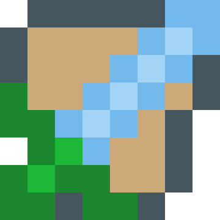
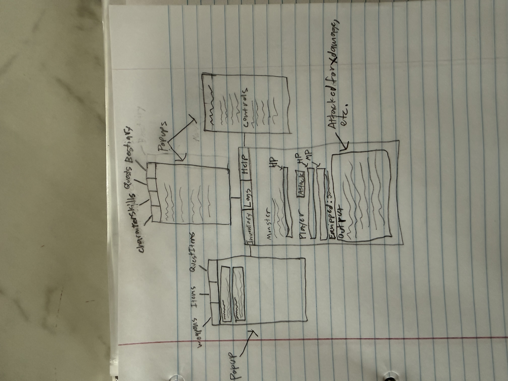

Overview
Purpose
To make a fun game for people to play through.
Audience
People who are interested in a challenging yet fair game.
Dynamic elements
Health, level, attack, and experience of both you and the enemy.
Branding
Website Logo

Style Guide
Color Palette
Palette URL: https://coolors.co/1c872f-ccaa7a-45565e-a3d3f5| Primary | Secondary | Accent 1 | Accent 2 |
|---|---|---|---|
| [#1C872F] | [#CCAA7A] | [#45565E] | [#A3D3F5] |
Pseudocode for your project
Stat blocks for weapons, armor, and enemies stored in arrays. Quest progress for quests stored in arrays. Functions created for attacks (both player and enemy), leveling up, and click events for tabs. Attacks work by calculating attack_stat + rand - defense_stat. Leveling up works on an experience system, with experience being calculated off of enemy stats. Experience needed for the next level is calculated using experience_needed * 1.1. Click events will be used to display the many separate tabs.
Wireframes
Landing page
Instead of alternate pages the tabs are popups that replace the main space on the page. The help tab is automatically loaded when the page is loaded to ensure that players can navigate it. It displays information on how to interact with the game. The inventory tab is for items that the player has picked up. The logs tab is for information not otherwise listed in the output. The output is a log of actions the player (or monsters) have taken. The desktop site will be a wider version of the same pages. All of the tabs will have logo images.
